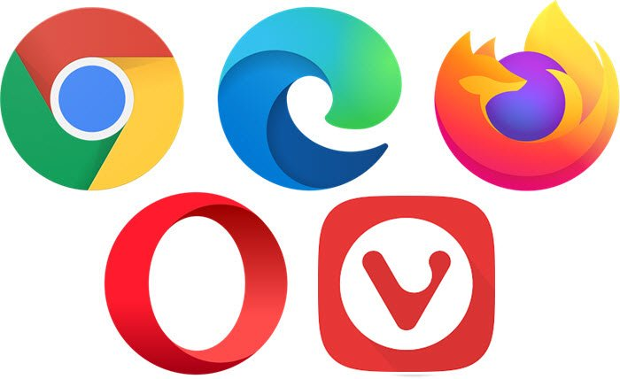

Web browsing is a thing that we do on our regular bases, but how did we get to this point? Well in this article you'll find that answer. (plus a ranking).
In 1990 Sir Tim Berners-Lee created the first web browser, it was called WorldWideWeb. Then, with the help of Nicola Pellow they created Line Mode Browser, it's main feature was that it could display web pages on dumb terminals. Now, I now this might sound rather sismplisct but a the time it was mindblowing. Just 3 years later Mosaic is created which was a graphical user interface for WorldWideWeb that made it easier to use for the average person, more people started using the internet and that's why the 1990's is described as the internet boom. During this time the Web grew at very fast rate, more people were interested on the internet and more web pages were being created, in other words it was awesome.
After some time the leader of the Mosaic team Marc Andreessen started his own company, Netscape was a Mosaic influenced/based browser released in 1994. Netscape Navigator became the most popular browser in no time since it was really easy to use. But of course Microsoft saw what was happening and launched Internet Explorer in 1995, This started the first browser war, Netscape Navigator vs Internet explorer.This war lasted for a few year, although it became one sided really quickly, Microsoft integrated Internet Explorer with the worlds most popular operating system Windows. When this happened it was game over for Netscape they lost the war. Internet Explorer became the worlds biggest browser in the early 2000's with over 95% of usage.
However, it was not the end of Netscape, in 1998 they launched what would become Mozilla Foundation, the idea was to create an open source browser. This of course became Mozilla Firefox launched in 2004, it popularity peak was in 2010 with a decent 32%. Today Firefox is the most used browser on Linux since its the default web browser on most of the distributions.
Apple lauched Safari in 2003. This browser is a great success on the Apple ecosystem. However it did not become popular elsewhere.
Google made it's first appearance in 2008 releasing Google Chrome, this browser was a breath of fresh air from users who got frustated using old Internet Explorer. Google made it so Chrome had good connectivity with Google acounts so the user had a better experience. Chrome became the most popular browser in 2012 and has remain on top ever since.
In a chance of redeeming itself Microsoft released Edge in 2015 alongside Windows 10. Unlike the now dead Internet Explorer, Microsoft Edge is well optimized and based of chromium.
In my opinion Microsoft Edge is best browser out there if you don't mind Microsoft background, Edge is chromium based however it's fully optimized and does not consume much ram. Download page.
If you don't like Microsoft Firefox might be the one for you, is a chromium based open source browser which doesn't consume much ram, however sometimes it might act a little wierd, but is a great browser.
I dicided to put these on the same category sisce they are basically the same. The only difference is that Opera is parcially open source and Vivaldi is completely open source. My problem with these browser is that they try to become operating sytems which I dislike, I think a browser should be a browser, these browsers add multiple (in most cases) unnecesary features that are well optimized and consume a lot of ram.
Google Chrome in my opinion is the worst browser I've ever used, It uses an absurd amount of ram, it tries to be an operating system (which kind of is with Chrome OS) and it's not open source. I know that the first option that I have is not near to being an open source browser, but I've never run into any problem with Edge, Chrome however slows your computer to a point that is just stupid to say the least. I used chrome for like two years and it got to the point that I couldn't have chrome open while I was in another program in my PC, my computer would be so slow that I had to hard reset it. I also now that the connectivity of chrome is great since you can hook up your google account easily but everything else is so bad.
That was the history of Web browsing and my personal ranking of the best web Browsers.